#Outro exemplo: https://albert-rapp.de/posts/ggplot2-tips/07_four_ways_colors_more_efficiently/07_four_ways_colors_more_efficiently.html
#https://r-graph-gallery.com/package/gghighlight.html
#https://cran.r-project.org/web/packages/gghighlight/vignettes/gghighlight.html
# https://livro.curso-r.com/8-2-extensões-do-pacote-ggplot2.html
library(tidyverse)── Attaching core tidyverse packages ──────────────────────── tidyverse 2.0.0 ──
✔ dplyr 1.1.4 ✔ readr 2.1.5
✔ forcats 1.0.0 ✔ stringr 1.5.1
✔ ggplot2 3.5.2 ✔ tibble 3.3.0
✔ lubridate 1.9.4 ✔ tidyr 1.3.1
✔ purrr 1.0.4
── Conflicts ────────────────────────────────────────── tidyverse_conflicts() ──
✖ dplyr::filter() masks stats::filter()
✖ dplyr::lag() masks stats::lag()
ℹ Use the conflicted package (<http://conflicted.r-lib.org/>) to force all conflicts to become errorsdat <- tibble(
id = 1:19,
fulfilled = c(803, 865, 795, 683, 566, 586, 510, 436, 418, 364, 379, 372, 374, 278, 286, 327, 225, 222, 200),
accuracy = c(86, 80, 84, 82, 86, 80, 80, 93, 88, 87, 85, 85, 83, 94, 86, 78, 89, 88, 91),
error = c(10, 14, 10, 14, 10, 16, 15, 6, 11, 7, 12, 13, 8, 4, 12, 12, 7, 10, 7),
null = 100 - accuracy - error
) %>%
mutate(across(accuracy:null, ~. / 100))
dat# A tibble: 19 × 5
id fulfilled accuracy error null
<int> <dbl> <dbl> <dbl> <dbl>
1 1 803 0.86 0.1 0.04
2 2 865 0.8 0.14 0.06
3 3 795 0.84 0.1 0.06
4 4 683 0.82 0.14 0.04
5 5 566 0.86 0.1 0.04
6 6 586 0.8 0.16 0.04
7 7 510 0.8 0.15 0.05
8 8 436 0.93 0.06 0.01
9 9 418 0.88 0.11 0.01
10 10 364 0.87 0.07 0.06
11 11 379 0.85 0.12 0.03
12 12 372 0.85 0.13 0.02
13 13 374 0.83 0.08 0.09
14 14 278 0.94 0.04 0.02
15 15 286 0.86 0.12 0.02
16 16 327 0.78 0.12 0.1
17 17 225 0.89 0.07 0.04
18 18 222 0.88 0.1 0.02
19 19 200 0.91 0.07 0.02# Este conjunto de dados contém muitas taxas de precisão e erro de
# diferentes armazéns (anônimos). Além disso, existem “taxas nulas”.
#Estes provavelmente estão relacionados a problemas de qualidade de
#dados. Além disso, esse conjunto de dados é aparentemente retirado
#de um cliente que os contadores de histórias de dados ajudaram.
#Em qualquer caso, aqui está umggplot2recriação do enredo inicial
#do cliente. Observe que o enredo não corresponde exatamente, mas
#está próximo o suficiente para obter a essência.
theme_set(theme_minimal())
dat_long <- dat %>%
pivot_longer(
cols = accuracy:null,
names_to = 'type',
values_to = 'percent'
)
dat_long %>%
ggplot(aes(id, percent, fill = factor(type, levels = c('null', 'accuracy', 'error')))) +
geom_col() +
labs(
title = 'Warehouse Accuracy Rates',
x = 'Warehouse ID',
y = '% of total orders',
fill = element_blank()
) +
scale_y_continuous(labels = ~scales::percent(., accuracy = 1), breaks = seq(0, 1, 0.1))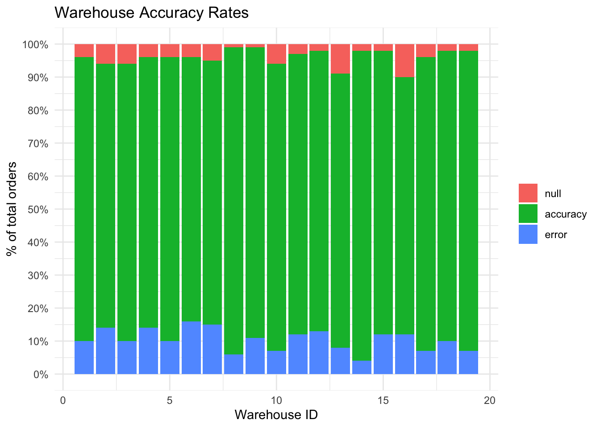
#Como é bem conhecido, o gráfico mostra dados. Mas qual é a mensagem
#deste dataviz? Para tornar a mensagem mais explícita, o enredo é
#transformado durante o curso do vídeo. Dê uma olhada na história
#que exatamente os mesmos dados podem contar.
#Ao ler o livro SWD, sei que algumas das técnicas que foram usadas nesta imagem podem ser usadas em muitos cenários. Portanto, decidi documentar as etapas que tomei para recriar o dataviz com o ggplot.
#Tentei tornar essa documentação o mais acessível possível. Consequentemente, se você já está bastante familiarizado com como personalizar os detalhes de um ggplot, algumas das explicações ou referências podem ser supérfluas. Sinta-se à vontade para ignorá-los. Dito isso, vamos transformar o enredo.
#Vire os eixos para nomes longos
#Embora não seja realmente um problema aqui, armazéns ou outros lugares podem ser mais identificáveis por um nome (longo) em vez de um ID. Para garantir que esses nomes sejam legíveis, mostre-os nos eixos y. Quando eu aprendi o ggplot pela primeira vez, havia a camadacoord_flip()para fazer esse trabalho para nós. Hoje em dia, no entanto, muitas vezes você pode evitarcoord_flip()porque muitos geoms já entendem o que você quer dizer, quando você mapeia dados categóricos para a estética y. Mas certifique-se de que o ggplot saiba que você quer dizer dados categóricos (especialmente se os rótulos forem numéricos como aqui).
categorial_dat <- dat_long %>%
mutate(
id = as.character(id),
)
categorial_dat %>%
ggplot(aes(x = percent, y = id)) +
geom_col(
aes(group = factor(type, levels = c('error', 'null', 'accuracy'))),
col = 'white', # set color to distinguish bars better
)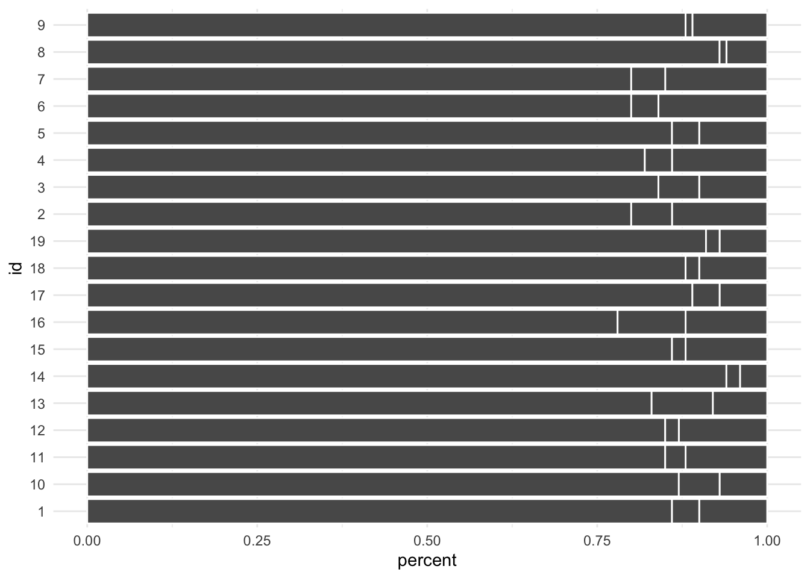
# Observe que eu usei oGrupo– em vez dePreencher-estético porque eu só preciso de agrupamento. Além disso, é sempre uma boa ideia evitar o uso excessivo de cores. Isso nos permitirá enfatizar partes da nossa história com cores mais tarde.
#Adicionar pontos de referência
#Outra boa ideia é colocar seus dados em perspectiva. Para fazer isso, inclua um ponto de referência. Esta pode ser uma estatística resumida, como a taxa média de erro. Para mais uma grande demonstração de pontos de referência, você também pode conferir a evolução de um ggplot de Cédric Scherer.
averages <- dat_long %>%
group_by(type) %>%
summarise(percent = mean(percent)) %>%
mutate(id = 'ALL')
# Para permitir que seu leitor obtenha uma visão geral rápida,
#coloque seus dados em alguma forma de ordem sensata. Isso alivia o
#fardo de ter que entender o que o visual mostra. Além disso,
#observe que já fizemos parte disso. Veja, com a ordem dos níveis
#noGrupoestética, influenciamos a ordem das barras empilhadas.
#Aqui, nos certificamos de que quantidades importantes comecem nas
#bordas esquerdas ou direitas.
#Por que isso é útil, você pergunta? Bem, as barras que começam à
#esquerda começam todas no mesmo ponto de referência. Portanto,
#as comparações são bastante fáceis para essas barras. O mesmo vale
#para a borda direita. Consequentemente, é melhor reservarmos esses
#assentos VIP para os dados importantes. Veja o que acontece se eu
#colocar a precisão no meio.
dat_with_summary <- categorial_dat %>%
bind_rows(averages)
dat_with_summary %>%
ggplot(aes(x = percent, y = id)) +
geom_col(
aes(group = factor(type, levels = c('error', 'null', 'accuracy'))),
col = 'white',
)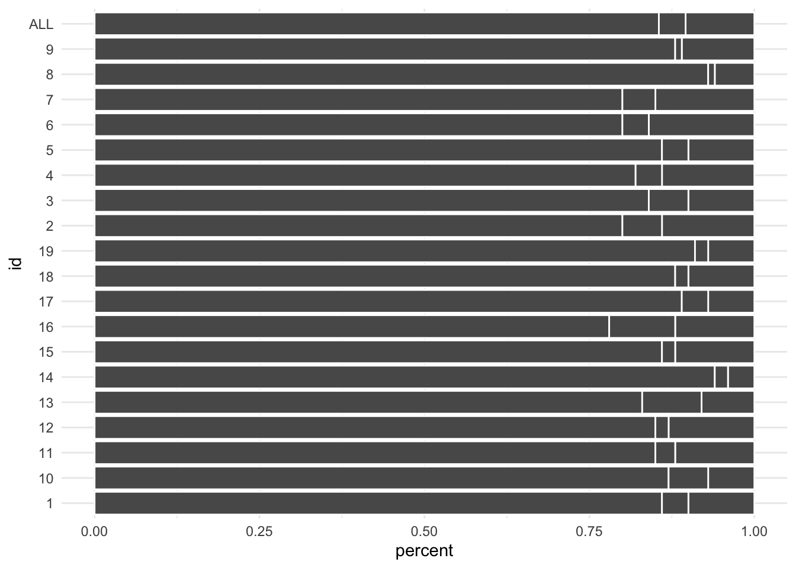
dat_with_summary %>%
ggplot(aes(x = percent, y = id)) +
geom_col(
aes(group = factor(type, levels = c('error', 'accuracy', 'null'))),
col = 'white',
)#Agora, não podemos realmente ver quais armazéns têm maior precisão.
#Dado que a precisão é provavelmente algo com que nos importamos,
#isso é ruim. Mas podemos mudar ainda mais a ordem. Por exemplo,
#também podemos pedir as barras por taxa de erro. Aqui,fct_reorder()
#é nosso amigo.
ordered_dat <- dat_with_summary %>%
mutate(
type = factor(type, levels = c('error', 'null', 'accuracy')),
id = fct_reorder(id, percent, .desc = T)
)
ordered_dat %>%
ggplot(aes(x = percent, y = id)) +
geom_col(
aes(group = type),
col = 'white',
)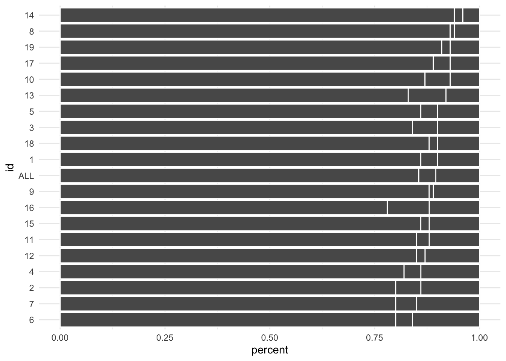
#Em seguida, é hora de destacar os pontos da sua história.
#Isso pode ser feito com oggdestaquecomo demonstrei em outro post
#do blog. Alternativamente, podemos definir as cores manualmente.
#A última abordagem me deu os melhores resultados neste caso,
#então vamos com isso. Mas eu ainda sou um grande fã deggdestaque,
#então não descarte seu poder ainda.
# Set colors as variable for easy change later
unhighlighted_color <- 'grey80'
highlighted_color <- '#E69F00'
avg_error <- 'black'
avg_rest <- 'grey40'
# Compute new column with colors of each bar
colored_dat <- ordered_dat %>%
mutate(
custom_colors = case_when(
id == 'ALL' & type == 'error' ~ avg_error,
id == 'ALL' ~ avg_rest,
type == 'error' & percent > 0.1 ~ highlighted_color,
T ~ unhighlighted_color
)
)
p <- colored_dat %>%
ggplot(aes(x = percent, y = id)) +
geom_col(
aes(group = type),
col = 'white',
fill = colored_dat$custom_colors # Set colors manually
)
p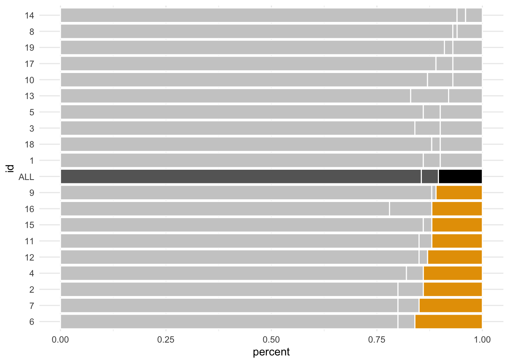
#Observe como seus olhos são imediatamente atraídos para a região pretendida. Esse é o poder das cores! Além disso, observe que definir as cores manualmente assim funcionou porquePreencheremgeom_col()é vetorizado. Isso nem sempre é o caso. Nesses casos, você pode achar que a programação funcional resolve o seu problema.
#Remova a expansão dos eixos e permita o desenho fora da grade
#Você notou que ainda há alguma bagunça no enredo? Remover a desordem de um enredo é um elemento central da aparência SWD. Pessoalmente, eu gosto dessa abordagem. Então, vamos ao essencial e remover o que não precisa estar lá. Neste caso, ainda existem linhas horizontais (fracas) atrás de cada barra. Além disso, isso faz com que os IDs do armazém sejam ligeiramente removidos das barras. Nós mudamos isso formatando o sistema de coordenadas comcoord_cartesian().
p <- p +
coord_cartesian(
xlim = c(0, 1),
ylim = c(0.5, 20.5),
expand = F, # removes white spaces at edge of plot
clip = 'off' # allows drawing outside of panel
)
p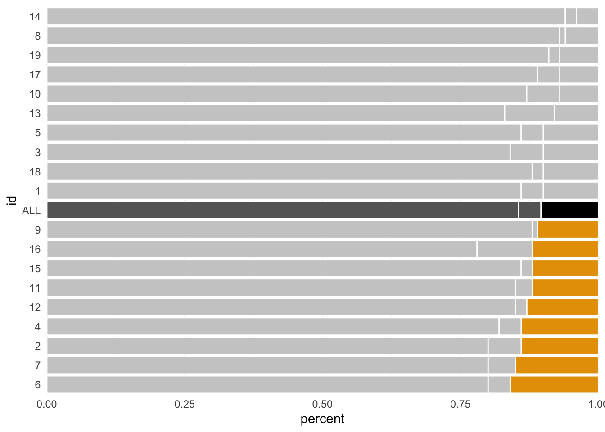
# Aqui, desligamos a expansão para evitar o desperdício de espaço em branco. Agora, as identidades estão no local designado e não vemos mais linhas de seus nomes para as barras. Se você quiser ainda mais poder na expansão do espaço, você pode sairExpandir = Te modifique a expansão para cada eixo comescala_*_contínuo()e oExpansão()função. Confira a folha de dicas bacana de Christian Burkhart que ensina tudo o que você precisa para entender as expansões.
#Em uma nota não relacionada, você pode se perguntar por que eu definiclipe = 'desligado'. Este pequeno segredo será revelado em breve. Por enquanto, saiba que isso permite que você desenhe geoms fora do painel regular.
#Mover e formatar eixos
#Você deve ter notado que o eixo x no gráfico final está na parte superior do painel, e não na parte inferior. Embora isso seja incomum, ajuda o leitor a ir direto ao ponto, pois os dados estão em exibição anteriormente. Isso pressupõe que os olhos de um leitor de dataviz típico primeiro olharão para o canto superior esquerdo e, em seguida, ziguezaguearão para baixo.
#Emggplot2, mover os eixos e definir os pontos de interrupção acontece em uma camada de escala. É aqui que usamos oescalas::porcent()função para transformar os rótulos dos eixos. Além disso, a mudança de rótulos acontece emLaboratórios()e os eixos restantes e mudanças de texto acontecem emtema().
unhighlighed_col_darker <- 'grey60'
p <- p +
scale_x_continuous(
breaks = seq(0, 1, 0.2),
labels = scales::percent,
position = 'top'
) +
labs(
title = 'Accuracy rates for highest volume warehouses',
y = 'WAREHOUSE ID',
x = '% OF TOTAL ORDERS FULFILLED',
) +
theme(
axis.line.x = element_line(colour = unhighlighed_col_darker),
axis.ticks.x = element_line(colour = unhighlighed_col_darker),
axis.text = element_text(colour = unhighlighed_col_darker),
text = element_text(colour = unhighlighed_col_darker),
plot.title = element_text(colour = 'black')
)
p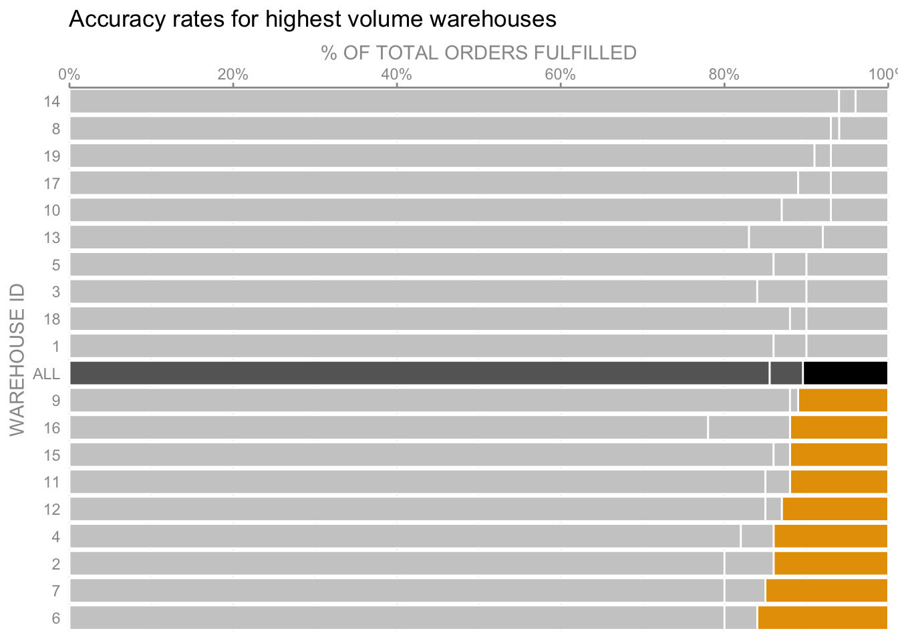
#Observe que personalizamos os elementos do tema viaElemento_*()funções. Basicamente, cada tipo de geom como “linha”, “reta”, “texto”, etc. tem o seu próprioElemento_*()função. otema()A função espera que os atributos sejam alterados usando estes. Se você não está familiarizado com esse conceito, talvez a parte correspondente nas minhas notas de palestra do YARDS o ajude.
#Alinhar rótulos
#Alinhar elementos do gráfico, por exemplo, rótulos, para formar linhas limpas é outro aspecto importante da aparência SWD. Antes de ler sobre isso, eu nem percebi, mas uma vez que você vê, não pode voltar atrás. Basicamente, os gráficos parecem “mais harmoniosos” se houver linhas claras (não necessariamente desenhadas) como nas bordas esquerda e direita das barras empilhadas. Mas esse conceito não para com as barras e também pode ser usado para os rótulos. Vamos demonstrar isso movendo os rótulos com mais detema().
p <- p +
theme(
axis.title.x = element_text(hjust = 0),
axis.title.y = element_text(hjust = 1),
plot.title.position = 'plot'
# aligns the title to the whole plot and not the (inner) panel
)
p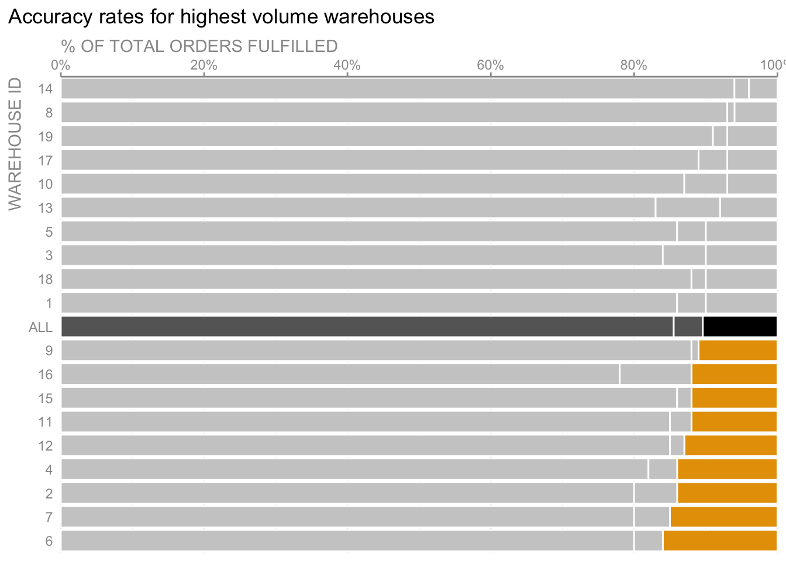
#Mais uma vez, o design impõe que informações importantes, como o que está em um eixo, estão no canto superior esquerdo. Isso foi feito mudandoHjust. Neste casoApenas = 0Corresponde à esquerda justificada, enquantoHjust = 1Corresponde à direita justificada. Claro,Vjustfunciona da mesma forma. Para mais detalhes w.r.t.HjustEVjust, confira esta resposta de stackoverflow que oferece tudo o que você precisa em um visual. Para sua conveniência, aqui está uma forma ligeiramente alterada desse visual.
#Mas uma vez que você começa a alinhar os títulos dos eixos, você percebe que os rótulos de 0% e 100% saem da grade. Poderíamos tentar definirHjustdeaxis.text.xemtema()mas, infelizmente, isso não é vetorizado. Posteriormente, todosHjustOs valores devem ser os mesmos. Isso não é bom. Portanto, desenhei os rótulos dos eixos manualmente comanotar()mas certifique-se de remover os rótulos atuais emescala_x_contínuo(). Além disso, agora você sabe por que tivemos que definirclipe = 'desligado'mais cedo. Os rótulos dos eixos estão fora do painel regular.
p <- p +
# Overwriting previous scale will generate a warning but that's ok
scale_x_continuous(
breaks = seq(0, 1, 0.2), # We still want the axes ticks
labels = rep('', 6), # Empty strings as labels
position = 'top'
) +
annotate(
'text',
x = seq(0, 1, 0.2),
y = 20.75,
label = scales::percent(seq(0, 1, 0.2), accuracy = 1),
size = 3,
hjust = c(0, rep(0.5, 4), 1),
# individual hjust here
vjust = 0,
col = unhighlighed_col_darker
) +
theme(
axis.title.x = element_text(hjust = 0, vjust = 0)
# change vjust to avoid overplotting
)Scale for x is already present.
Adding another scale for x, which will replace the existing scale.## Scale for 'x' is already present. Adding another scale for 'x', which will
## replace the existing scale.
p# O mesmo truque pode ser usado para adicionar a descrição da categoria (precisão, nulo, erro) no canto superior direito e rotular as barras destacadas. Para a última parte, simplesmente extraímos as linhas correspondentes de nossos dados e usamos isso em conjunto comgeom_texto().
text_labels <- colored_dat %>%
filter(type == 'error', percent > 0.1) %>%
mutate(percent = scales::percent(percent, accuracy = 1))
p <- p +
geom_text(
data = text_labels,
aes(x = 1, label = percent),
hjust = 1.1,
col = 'white',
size = 4
)
p# Observe que eu usei umHjustvalor maior que 1 aqui para adicionar algum espaço em branco no lado direito dos rótulos. Caso contrário, o sinal de porcentagem estará muito perto da borda da barra.
#Em seguida, adicionamos as descrições da categoria. Isso é um pouco mais complicado, no entanto, porque queremos destacar uma palavra também, então, vamos adicionar umRichtextconforme descrito na minha postagem anterior no blog.
#Agora que o enredo do bar está concluído, podemos trabalhar no texto da história. Para isso, criamos outro gráfico que contém apenas o texto. Mais tarde, combinaremos nossas duas tramas com oPatchworkpacote. Não há técnicas realmente conhecidas aqui, então vamos direto ao código.
library(ggtext)
p <- p +
annotate(
'richtext',
x = 1,
y = 21.25,
label = "ACCURATE | NULL | <span style = 'color:#E69F00'>ERROR</span>",
hjust = 1,
vjust = 0,
col = unhighlighed_col_darker,
size = 4,
label.colour = NA,
fill = NA
)
p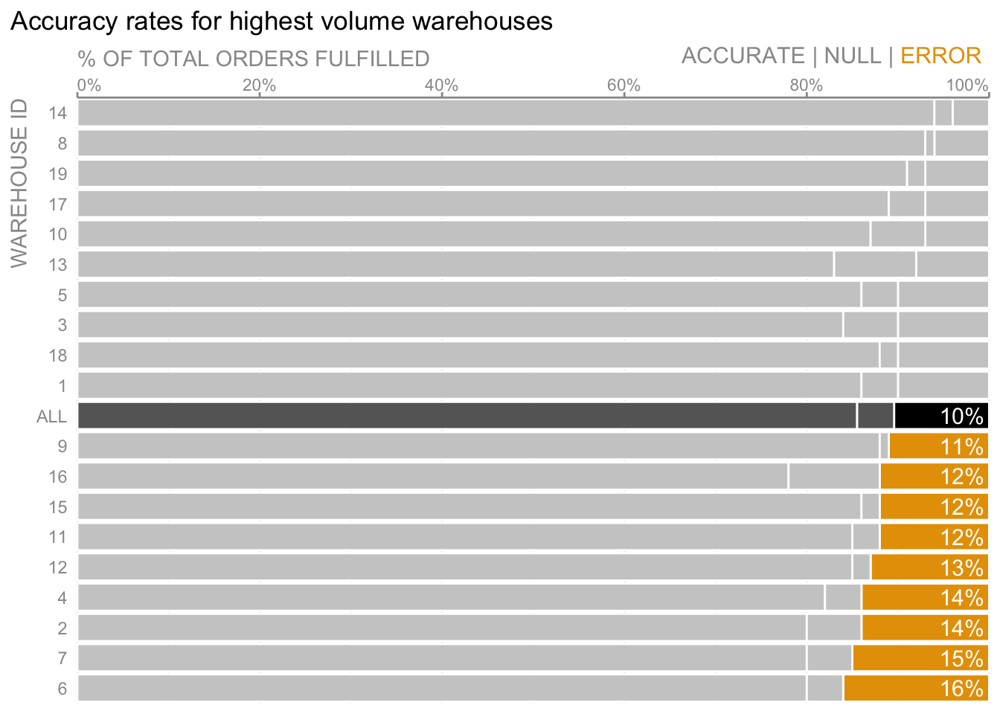
#Agora que o enredo do bar está concluído, podemos trabalhar no texto da história. Para isso, criamos outro gráfico que contém apenas o texto. Mais tarde, combinaremos nossas duas tramas com oPatchworkpacote. Não há técnicas realmente conhecidas aqui, então vamos direto ao código.
tib_summary_text <- tibble(
x = 0,
y = c(1.65, 0.5),
label = c("<span style = 'color:grey60'>OVERALL:</span> **The error rate is 10% across all<br>66 warehouses**. <span style = 'color:grey60'>The good news is that<br>the accuracy rate is 85% so we\'re hitting<br>the mark in nearly all our centers due to<br>the quality initiatives implemented last year.</span>",
"<span style = 'color:#E69F00'>OPPORTUNITY TO IMPROVE:</span> <span style = 'color:grey60'>10 centers<br>have higher than average error rates of<br>10%-16%.</span> <span style = 'color:#E69F00'>We recommend investigating<br>specific details and **scheduling meetings<br>with operations managers to<br>determine what's driving this.**</span>"
)
)
# Create text plot with geom_richtext() and theme_void()
text_plot <- tib_summary_text %>%
ggplot() +
geom_richtext(
aes(x, y, label = label),
size = 3,
hjust = 0,
vjust = 0,
label.colour = NA
) +
coord_cartesian(xlim = c(0, 1), ylim = c(0, 2), clip = 'off') +
# clip = 'off' is important for putting it together later.
theme_void()
text_plot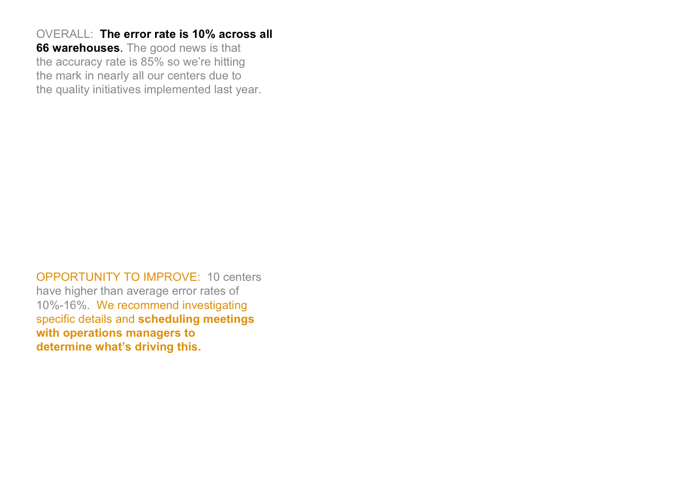
# Adicione a mensagem principal como novo título e legenda
#Como eu disse antes, vamos juntar as duas parcelas comPatchwork. Se você nunca lidou comPatchwork, fique à vontade para conferir minha breve introdução ao patchwork. Juntar os enredos nos dá outra oportunidade: agora podemos definir títulos e legendas adicionais de todo o enredo. Use estes para adicionar a mensagem principal do seu enredo.
#Mas certifique-se de que haja espaço em branco suficiente ao redor deles definindo as margens do título emtema(). Caso contrário, seu enredo parecerá “muito cheio”. Adicionar espaçamento é alcançado através de ummargem ()função emelemento_texto(). No entanto, neste caso, usamoselement_markdown()que funciona exatamente da mesma forma, mas permite a sintaxe Markdown, como usar asteriscos para textos em negrito.
# Save texts as variables for better code legibility
# Here I used Markdown syntax
# To enable its rendering, use element_markdown() in theme
title_text <- "**Action needed:** 10 warehouses have <span style = 'color:#E69F00'>high error rates</span>"
subtitle_text <- "<span style = 'color:#E69F00'>DISCUSS:</span> what are <span style = 'color:#E69F00'>**next steps to improve errors**</span> at highest volume warehouses?<br><span style = 'font-size:10pt;color:grey60'>The subset of centers shown (19 out of 66) have the highest volume of orders fulfilled</span>"
caption_text <- "SOURCE: ProTip Dashboard as of Q4/2021. See file xxx for additional context on remaining 47 warehouses<br><span style = 'font-size:6pt;color:grey60'>Original: Storytelling with Data - improve this graph! exercise | {ggplot2} remake by Albert Rapp (@rappa753)."
# Compose plot
library(patchwork)
p +
text_plot +
# Make text plot narrower
plot_layout(widths = c(0.6, 0.4)) +
# Add main message via title and subtitle
plot_annotation(
title = title_text,
subtitle = subtitle_text,
caption = caption_text,
theme = theme(
plot.title = element_markdown(
margin = margin(b = 0.4, unit = 'cm'),
# 0.4cm margin at bottom of title
size = 16
),
plot.subtitle = element_markdown(
margin = margin(b = 0.4, unit = 'cm'),
# 0.4cm margin at bottom of title
size = 11.5
),
plot.caption.position = 'plot',
plot.caption = element_markdown(
hjust = 0,
size = 7,
colour = unhighlighed_col_darker,
lineheight = 1.25
),
plot.background = element_rect(fill = 'white', colour = NA)
# This is only a trick to make sure that background really is white
# Otherwise, some browsers or photo apps will apply a dark mode
)
) 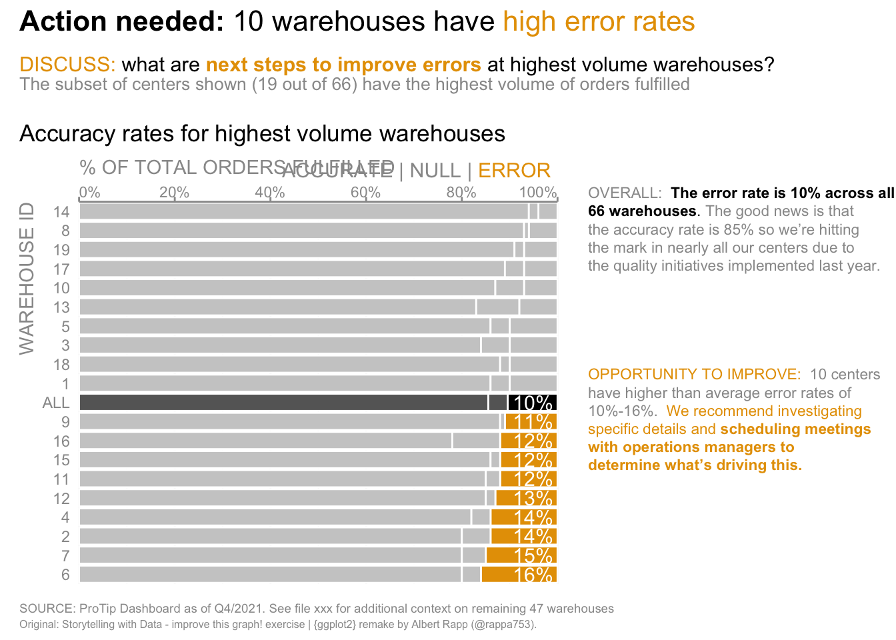
# Obtenha os tamanhos certos
#No último enredo, eu trapaceei. Eu te dei o código correto que usei para gerar a imagem. Mas eu não executei. Em vez disso, eu apenas exibi o código e depois mostrei a você a imagem (importada) do início desta postagem no blog. Por que eu fiz isso? Porque acertar os tamanhos é uma droga!
# Se você já lidou com o ggplot o suficiente, saberá que os tamanhos do texto geralmente são definidos em termos absolutos e não relativos. Portanto, se você fizer o gráfico de barras menor em largura (como fizemos), as barras podem ser adequadamente dimensionadas para a nova largura, mas, na maioria das vezes, os textos não são. Nesse caso, isso levou a fontes muito grandes, como bem demonstrado na útil postagem do blog de Christophe Nicault.
#Então, como você evita isso? Primeiro, escolha o tamanho e as fontes por último (escolha a fonte primeiro, no entanto). Isso economizará muito trabalho repetitivo quando você alterar o alinhamento em seu gráfico. Mas essa dica só vai te levar até cedo, porque você tem que corrigir alguns tamanhos no meio para ter uma ideia da visualização que está tentando criar.
#Portanto, tente colocar sua tela em um tamanho apropriado primeiro. Eu tento fazer isso usando oFilmadorapacote no início do meu processo de visualização. Isso garantirá que meus gráficos sejam salvos como um arquivo png com dimensões predeterminadas e que o arquivo resultante seja exibido no painel Visualizador no RStudio (em oposição ao painel Gráficos).
#Por exemplo, no início do trabalho nesta visualização, eu chamei
camcorder::gg_record(
dir = 'img', dpi = 300, width = 16, height = 9, units = 'cm'
)Warning in camcorder::gg_record(dir = "img", dpi = 300, width = 16, height = 9,
: Writing to a folder that already exists. gg_playback may use more files than
intended!# Isso tornou um pouco mais fácil obter os tamanhos certos para a minha saída final, porque o tamanho da tela permanece o mesmo durante todo o processo. Embora tenha certeza de ligargg_record() Depois biblioteca(ggtext)ou certifique-se de ligargg_record()novamente se você adicionarTexto ggsó mais tarde. Caso contrário, seus gráficos voltarão a ser exibidos no painel Plots (com dimensionamento relativo). Finalmente, se você quiser usarFilmadoraem conjunto comMostrar texto, então tenha certeza de queMostrar textosaberá qual valor de dpi você escolheu ao ligargg_record().
showtext::showtext_opts(dpi = 300)